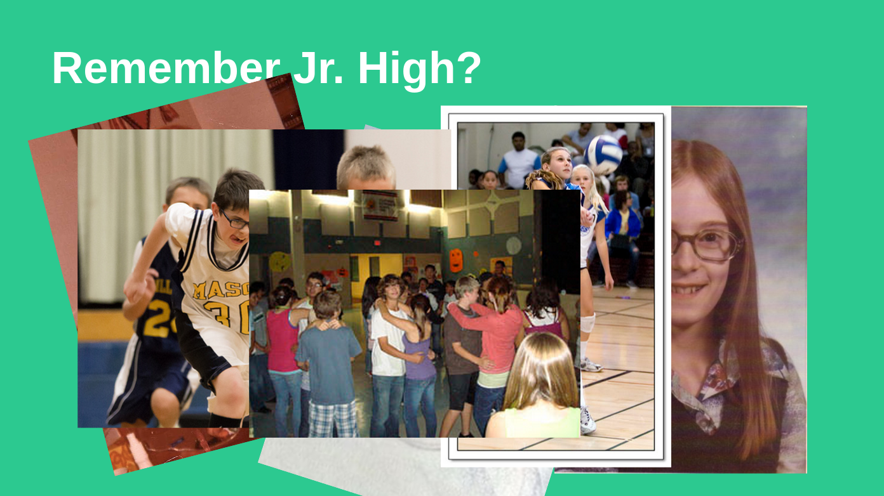
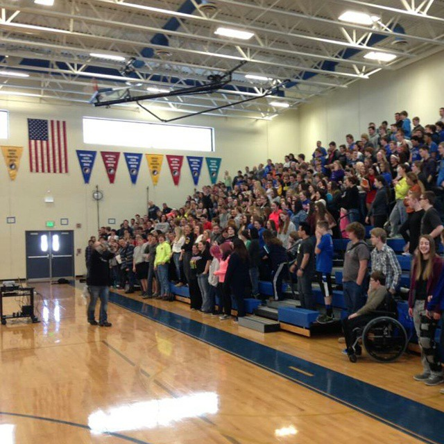

This week in the world of me2
If you have kept up with our weekly updates, the me2 team participated in a 6 week accelerated startup program called Venture School that finished up a week ago. As a little reward, each of us decided to have some fun this week in various ways. One member is halfway across the globe, one is on the East Coast, I went on a trip with one of our mentors to a speaking event as well as participated in a business pitch competition.
Pitch and Grow XX competition
Thursday of last week I participated in the Technology Association of Iowa's Pitch and Grow XX pitch competition. Pitch competitions are a great opportunity to practice your pitch and improve on it. Your pitch is never perfect but you can always work to make it better!
Grab your audience's emotions and they will listen.
A couple years ago I attended a Pitch and Grow competition where one of my really good friends took first place for his pitch of Anvil Guitars. Aaron, the owner of Anvil Guitars, gave an amazing presenation to the audience where he showed how much he truly was in love with building custom made guitars. Anvil Guitars exists because of the passion that Aaron has for quality. He puts his heart and soul into everything that he builds with his bare hands.
I remember watching the entire crowd having their eyes glued on the front of the screen, speechless, smiles on their face, listening to every single word that Aaron had to say. Even if they had no interest in guitars, everyone for those few minutes were in love with guitars. It was then that I learned how valuable it was to show how much you truly love your business when you pitch. Aaron won the crowd over to deliver a giant message and ended up winning the compeitition.
When I was preparing the pitch for Pitch and Grow XX, I had Aaron constantly in the back of my mind where I had to find some way of grabbing onto the emotions of the audience. What better way then getting them to think back to back when they were in Jr High?

Do you remember back when you were in Jr. High?
"Remember back when you were in Jr. High? You had braces, some new Nike shoes and some dorky glasses. Remember going out for basketball, vollyball, and band? Oh, and don't forget those precious dances with your sweet heart you used to go to!" This was how I opened up the pitch presentation at the competition. I had a lot of fun with it because I watched everyone in the crowd get a big smile on their face and give me some good laughs while viewing the classic 1970s portrait pictures up on the screen I showed off. It was working! After the pitch was over, I asked a handful of people what was on their mind at the very beginning of the pitch and they said they were thinking about memories of when they were in Jr High. That was what I was looking for!
Always improve that pitch.
Every time that we pitch me2 to people, we try our best to answer all of those typical questions that we receive each and every time that we pitch. Lets answer those questions in the pitch so we can move on and get new feedback! I felt very good during the competition because all of the feedback that we got from the judges was all new feedback! I am going back right now and improving our pitch to match what they said so next time we see them, we can get even better feedback. Always improve that pitch!
I decided to go to the Pitch and Grow competition because I wanted to get the chance to practice our pitch to become better at speaking as well as receiving new feedback on our presentation. What was super awesome was that the judges liked my pitch so well the first time I presented that day that I got to pitch a second time that day in the final pitch off round of the competition! The pitch competition was such a great experience and I look forward to the next one. If you know of a pitch competition happening, please send it my way.
Speaking of grabbing your audience's emotions...
Do you know Josh Coburn? If you don't, then you should. Josh is a life coach, speaker, entrepreneur, mentor and just all around wonderful human being. We met Josh a couple months ago and since then we have had the great opportunity to speak with him a number of times to pick his brain on some thoughts we had on me2. We have had great interactions together on the phone but I wanted to get to know him a little better. Last Friday I took a trip with him to one of his speaking events and let me tell you, it was in my top inspirational talks I have ever witnessed in the my life.
Josh Coburn. Breaking down stereotypes each and every day.
Because of the society that we live in, when you first see Josh you may think that he doesn't belong because of the way that he looks. Josh takes advantage of this to break down stereotypes to show the world that the stereotypes he represents are absolutely wrong. Josh is one of the most kindest people you will ever meet in your entire life. So kind that he invited me to join him when he went to Bondurant-Farrar High School to watch him speak last Friday.

Josh speaks to the audience during his speaking events about the times in his life that may not have been the best moments in his life. He gives the crowd everything he has with no barriers. He has a talent for grabbing onto the emotions of every student in the crowd and gets them to listen to the message he has to give. Every student can relate in one way or another to Josh because they know life can be tough. Josh is on their team every step of the way and he shows it. I had such a great day with Josh that day watching him change the lives of hundreds of young adults in the matter of less then an hour.
I have mentioned Josh a few times previously in our posts and you will hear more. Josh has so much to offer to what we are trying to accomplish here at me2. It is an honor to know him. He does such a great job with the students that he speaks with at his events. Students will give him his life stories and ask for advice when they first introduce themselves to him. There is never a question that you cannot ask Josh and I respect that very much. Such a great guy.
It comes to show that again that grabbing onto your audience's emotions will give you all of their attention.
Every young person struggles at some point in life. We are here to say #me2. You are not alone. @me2nation
Twitter
Instagram
Facebook
Website
Blog